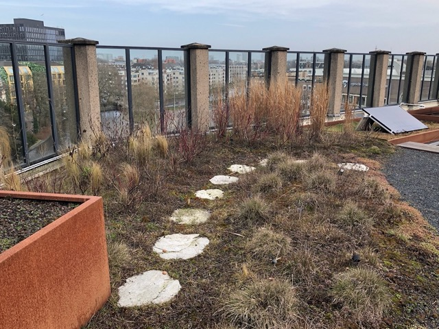

Introductie
Deze website gaat over de groene daken in Amsterdam. Groene daken in Amsterdam zijn de daken in Amsterdam die zijn begroeid met natuur. Ik ga het in deze website hebben over wat groene daken precies zijn, wat de voordelen zijn van groene daken en hoe je zelf een groen dak kan krijgen.
